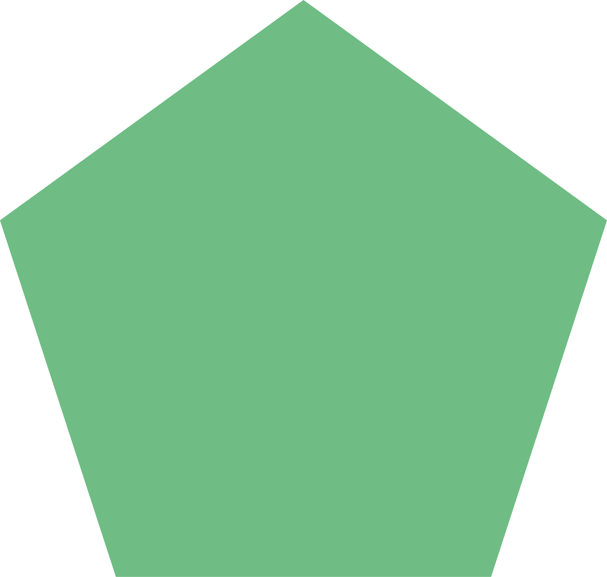

RNA science
Understanding the product and process decisions that influence RNA quality, performance, and scalability.
Team
RNA Forge combines specialist RNA know-how with the commercial discipline required to build investable, partner-ready development programs.

Operating model
We are building RNA Forge as a focused spinout: lean, commercially minded, and designed to translate specialist RNA expertise into capabilities that partners can use. The team works with a network of scientific, manufacturing, and commercial advisors as projects require.
As the company grows, this page will expand with named leadership, advisors, and operating roles. For now, RNA Forge is presented as a company under development and open to strategic conversations.
Understanding the product and process decisions that influence RNA quality, performance, and scalability.
Turning technical promise into development plans that can be executed with partners and suppliers.
Framing technical evidence for investors, funders, boards, and strategic collaborators.